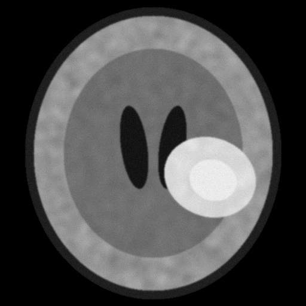
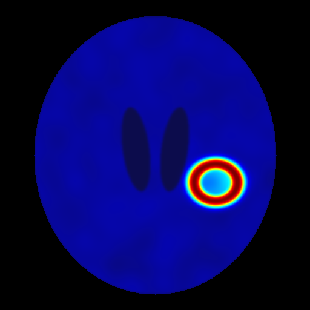

Ph.D. in Biomedical Engineering, IIT DelhiSep 2020 – Present
Centre for Biomedical Engineering · CGPA 9.17/10 · Advisor: Prof. Anup Singh, MedImg Lab
Thesis: Quantitative MRI and its Applications
I am a PhD scholar at the Centre for Biomedical Engineering, IIT Delhi, working with Prof. Anup Singh in the MedImg Lab. My thesis is on quantitative MRI and its applications.
I build deep learning methods for fast, reliable quantitative DCE-MRI in brain tumors: CNN estimators, an AIF-free three-point framework, and physics-separable networks with probabilistic and diffusion posteriors. On grade 2 to 4 gliomas these run about 66 times faster than conventional fitting, with similar grading accuracy, calibrated uncertainty, and robustness at a quarter of the standard contrast dose.

